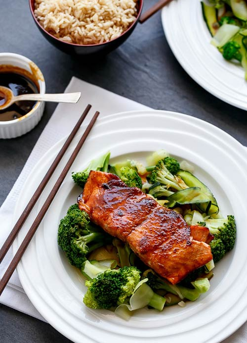

Cá hồi sốt Teriyaki ngon không phải nghĩ
Đây sẽ là món ăn hấp dẫn cho những ai là tín đồ của cá hồi.
Sốt Teriyaki là một trong những gia vị làm món ăn phổ biến không chỉ ở Nhật Bản mà còn ở nhiều nơi trên thế giới do nó có hương vị nhẹ nhàng, tinh tế và hết sức đặc trưng của ẩm thực Nhật bản. Nếu không mua được sốt Teryaki, ngay tại nhà bạn cũng có thể làm sốt Teryaki bằng các nguyên liệu gia vị quen thuộc.
Sốt Teryaki có thể chế biến với nhiều món ăn, trong đó có cả cá hồi. Bạn hãy thử cách làm cá hồi sốt teryaki dưới đây nhé, chắc chắn sẽ khiến ai cũng thích thú khi thưởng thức.
Nguyên liệu:
- 40ml xì dầu
- 30 ml rượu nấu ăn sake (rượu Nhật)
- 30ml rượu nấu ăn mirin (Mirin là loại rượu ngọt của Nhật, tương tự như rượu sake nhưng nồng độ cồn thấp hơn và hàm lượng đường cao hơn. Bạn có thể không cho mirin, nhưng có thêm rượu mirin hương vị món ăn sẽ ngon hơn).
- 45g đường nâu; 15ml giấm gạo (hoặc giấm táo); 2,5g bột tỏi; 4 miếng cá hồi phi lê (mỗi miếng khoảng 170g); 15ml dầu mè
- 1 cây hẹ (hoặc hành lá) để trang trí; 2 bát súp lơ xanh, luộc chín; 1 quả bí ngồi lớn, luộc chín
Cách làm: Bước 1: Trộn xì dầu, rượu mirin, đường nâu, giấm, bột tỏi với nhau trong một bát làm thành sốt Teryaki. Trộn cho đến khi đường tan. Đổ một nửa nước sốt này vào chảo nhỏ rồi đặt sang một bên.

Bước 2: Rửa sạch và thấm khô cá hổi bằng khăn giấy. Cho miếng cá hồi vào bát sốt Teryaki và ướp trong 2 phút mỗi bên mặt của miếng cá.

Bước 3: Đun nóng dầu ăn trong một chảo không dính ở lửa vừa. Sau đó chiên 2 miếng cá hồi cùng một lúc, chiên mỗi bên mặt cá 3-4 phút hoặc cho đến khi chín theo sở thích của bạn.
- Đun sôi chảo sốt Teryaki lúc đầu tiên với ngọn lửa lớn. Sau đó, hạ nhỏ lửa đun liu riu cho đến khi sốt cạn bớt và dày lên (bạn có thể thêm 1 ít nước ấm nếu cần).
Bước 4: Xếp cá hồi lên trên đĩa súp lơ xanh, bí ngòi luộc rồi rưới sốt Teryaki lên trên sau đó bạn có thể thưởng thức cá hồi sốt teryaki với cơm nhé!
Đây là một cách làm mới để món cá hồi thêm ngon hơn!
